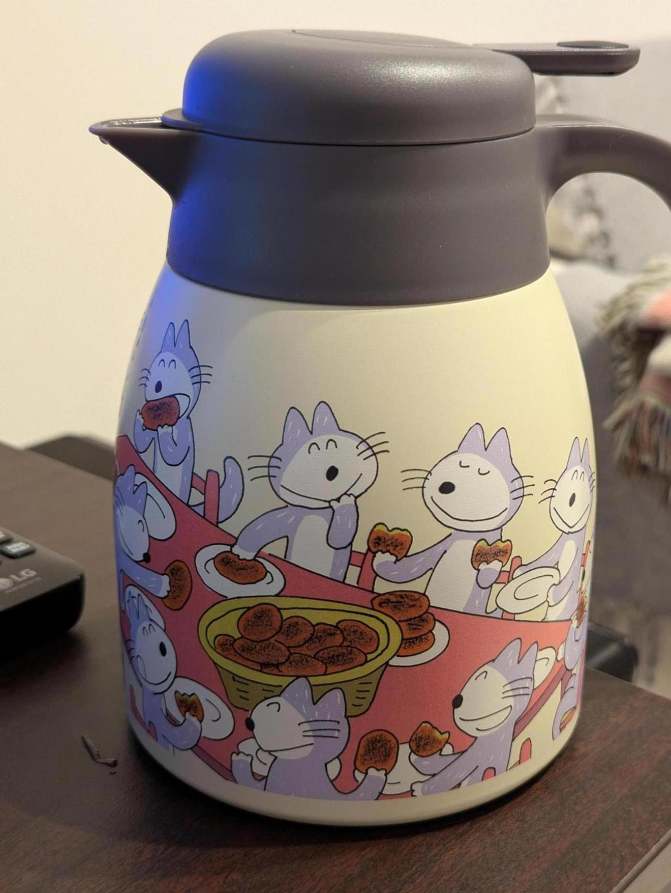
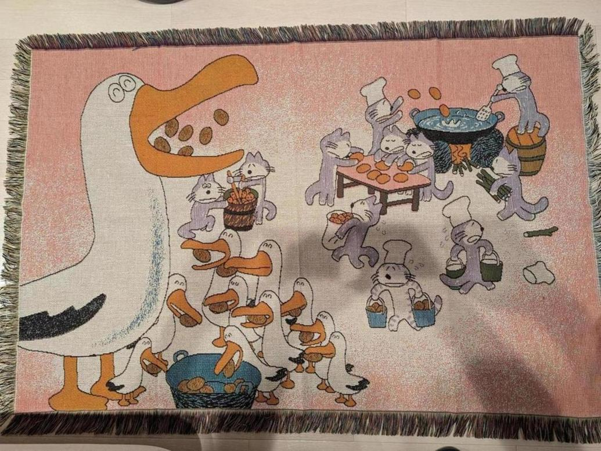
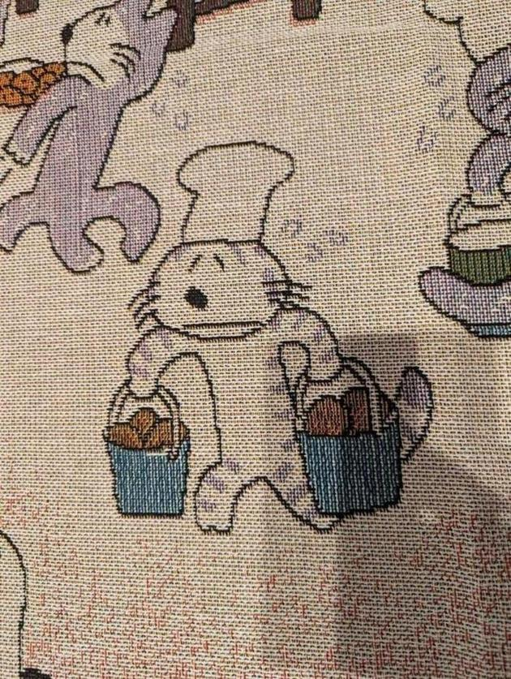

<- 日記

11ぴきのねこのポットを買ってしまった。 これはやかんではないので火にはかけられない。仕事中につい水を飲むのを忘れることが多いので、これに水と氷を入れておいて近くに置いておけば飲むだろうという魂胆である。

こういうラグも買ってしまった。11ぴきのねこがコロッケを作って、あほうどりがそれを食べているシーンだ。

よく見ると、ねこは全員かなりダルそうにしているところが気に入っている。